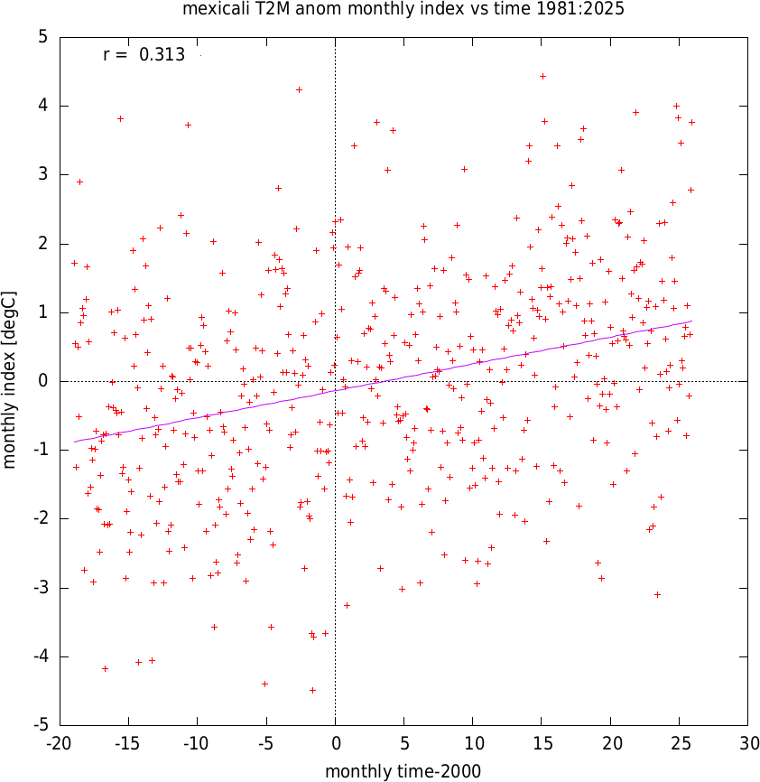
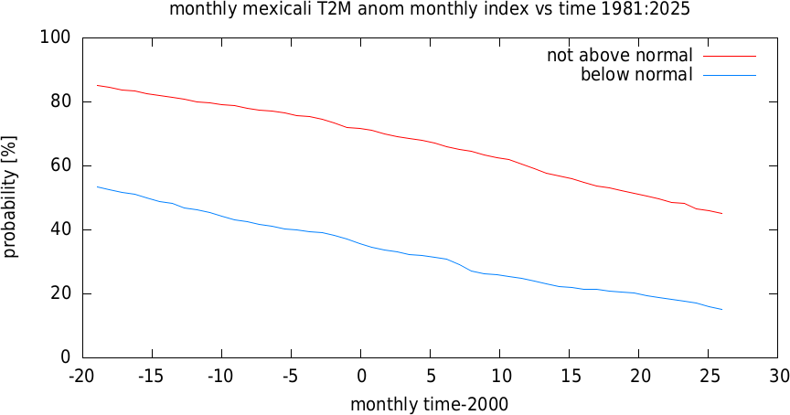

| months | lag | corr | p | no | 95% CI | |
|---|---|---|---|---|---|---|
| time | all year | 0 | 0.313 | 0.0000 | 540 | 0.23... 0.39 |
fit a+b*x 'data/iuploaded263020158.dump' using 1:2 via a,b
degrees of freedom (FIT_NDF) : 538
rms of residuals (FIT_STDFIT) = sqrt(WSSR/ndf) : 1.54122
variance of residuals (reduced chisquare) = WSSR/ndf : 2.37535
Final set of parameters Asymptotic Standard Error
a = -0.136453 +/- 0.06869 (50.34%)
b = 0.0389869 +/- 0.005106 (13.1%)
correlation matrix of the fit parameters:
a b
a 1.000
b -0.260 1.000
Therefore, use with care.
original percentiles 33.33 -0.72 66.67 0.71

